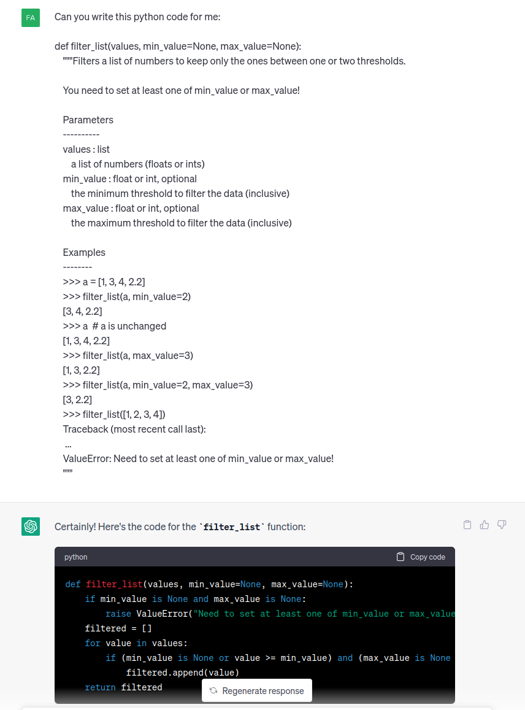
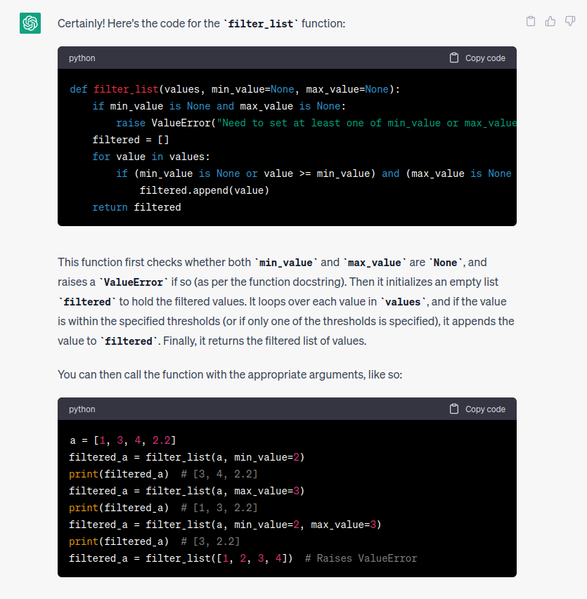

Learning with artificial intelligence#
The current learning and teaching practices are undergoing a major transformation, rapidly propelled by generative artificial intelligence. Tools like ChatGPT, which are easily accessible and free (for now), have proven to be more efficient in solving simple programming tasks compared to conventional methods such as a web search or relying on our own intellect. Ignoring this transformation would be unwise. In this brief lesson, I will highlight the available tools and advise on cautionary measures to be taken.
Generative AI and programming#
If you don’t know ChatGPT yet, you should google it. In fact, I am now going to demonstrate the power of generative AI by using ChatGPT to write most of the rest of this lesson. I will write ChatGPT’s prompts with a different formatting to differentiate it from mine.
Can you explain to a student how you generate code?
ChatGPT3 (free version):
Generative AI can produce code by using a neural network to learn from a large dataset of source code. The network is trained to understand the syntax, structure, and meaning of the code. Once the model has been trained, it can generate new code by taking a prompt or seed code as input and generating a sequence of tokens to complete the code. However, the generated code may not always be optimal or meet specific requirements, so it’s important to evaluate and modify it before using it in a real-world application.
ChatGPT can be used to solve most of your programming assignments of the past weeks. For example, I asked ChatGPT to solve last weeks assignment:

This implementation is correct. Let’s try it:
def filter_list(values, min_value=None, max_value=None):
"""Filters a list of numbers to keep only the ones between one or two thresholds.
You need to set at least one of min_value or max_value!
Parameters
----------
values : list
a list of numbers (floats or ints)
min_value : float or int, optional
the minimum threshold to filter the data (inclusive)
max_value : float or int, optional
the maximum threshold to filter the data (inclusive)
Examples
--------
>>> a = [1, 3, 4, 2.2]
>>> filter_list(a, min_value=2)
[3, 4, 2.2]
>>> a # a is unchanged
[1, 3, 4, 2.2]
>>> filter_list(a, max_value=3)
[1, 3, 2.2]
>>> filter_list(a, min_value=2, max_value=3)
[3, 2.2]
>>> filter_list([1, 2, 3, 4])
Traceback (most recent call last):
...
ValueError: Need to set at least one of min_value or max_value!
"""
if min_value is None and max_value is None:
raise ValueError("Need to set at least one of min_value or max_value!")
filtered = []
for value in values:
if (min_value is None or value >= min_value) and (max_value is None or value <= max_value):
filtered.append(value)
return filtered
# Testing
import doctest
doctest.testmod()
TestResults(failed=0, attempted=6)
All the tests pass! ChatGPT’s solution is shorter than the one I suggested you (but, in my opinion, less readable for beginners).
I asked ChatGPT where it got this solution from. Here is what it answered:
The code I provided is a custom implementation of the filter_list function based on the description you provided in your initial question. I wrote the code myself based on that description.
As an AI language model, I don’t have access to external sources by myself. However, the function implements a common data filtering operation and is similar in structure to other filtering functions found in Python’s standard library or third-party packages.
In summary, ChatGPT has the capability to generate functional code from scratch. While there are other tools such as Github Copilot that offer comparable services, the technology is still in its infancy and is rarely available for free. Additionally, the reliability of ChatGPT’s free version cannot be guaranteed.
Potential benefits of AI for learning#
I’m writing a lesson to first year university students about the potential advantages and benefits of using generative AI to learn python programming. Can you help me out?
Certainly! Here are some potential advantages and benefits of using generative AI to learn Python programming:
Faster learning: Generative AI tools can help students quickly generate examples of code and provide immediate feedback, allowing for faster learning and iteration.
Personalized learning: Generative AI models can adapt to each student’s learning style and pace, providing personalized feedback and guidance.
Improved problem-solving skills: Generative AI models can help students develop stronger problem-solving skills by providing examples of how to approach and solve programming challenges.
Enhanced creativity: Generative AI models can inspire students to explore new possibilities and generate novel ideas, leading to innovative approaches to programming and problem-solving.
Access to advanced techniques: Generative AI models can help students access advanced techniques and approaches to programming, such as machine learning and data analysis, which may be difficult to implement manually.
Improved collaboration: Generative AI models can facilitate collaboration between students by providing a common language and framework for working with complex programming concepts and data sets.
Increased motivation: Generative AI tools can make learning programming more engaging and fun, leading to increased motivation and interest in the subject.
Overall, using generative AI in Python programming education has the potential to accelerate learning, improve problem-solving skills, enhance creativity, and provide students with access to advanced techniques and approaches to programming.
OK so there is some truth in there, but also some exaggeration. It is true that ChatGPT offers explanations: together with its filter_list implementation, ChatGPT offered examples:

However, when asked a bit more in depth about its capabilities regarding code writing, ChatGPT advises more caution:
However, it’s important to note that generative AI models may not always produce high-quality or optimal code. The generated code may require further refinement or modification to meet specific requirements or constraints. Additionally, generated code may not always be optimal for a particular task or context, so it’s important to carefully evaluate and test the generated code before using it in production.
And this is very true.
Potential pitfalls of using generative AI for learning#
OK, fine, I believe you. Now tell me about the potential pitfalls of using generative AI for learning python programming.
Certainly! Here are some potential pitfalls to be aware of when using generative AI for learning Python programming:
Overreliance on AI-generated code: Students may become too reliant on generative AI tools to provide solutions to programming problems, leading to a lack of understanding and difficulty applying concepts to new problems.
Lack of creativity: While generative AI can provide examples of code, it may not encourage students to explore and generate their own solutions to programming challenges, leading to a lack of creativity and innovation.
Limited scope: Generative AI tools may only be able to generate solutions to a limited range of programming problems, leading to a narrow understanding of Python programming.
Lack of critical thinking: Students may become overly focused on generating correct solutions rather than developing critical thinking and problem-solving skills, leading to a lack of creativity and innovation.
Difficulty with real-world application: AI-generated solutions may not always be applicable in real-world scenarios, leading to difficulties when applying programming concepts to practical problems.
Dependence on technology: Students may become too reliant on generative AI tools and lose the ability to solve programming problems manually, leading to difficulties in situations where technology is not available or applicable.
Ethical concerns: There are ethical concerns surrounding the use of generative AI in education, such as the potential for bias and the impact on employment in the programming field.
Overall, it’s important to approach the use of generative AI for learning Python programming with a critical eye and a balanced perspective. While there are potential benefits, it’s also important to be aware of the limitations and potential pitfalls, and to encourage students to develop a well-rounded understanding of programming concepts and problem-solving skills.
Here again, I agree with most of it. With one exception maybe:
Don’t you think that generative AI will increase inequality between students (rich vs poor, gifted vs less talented)?
There is a possibility that the use of generative AI in Python programming education could increase inequality between students. Students who have access to advanced technology and resources may have an advantage in using generative AI tools compared to those who do not have access. Additionally, students who are naturally talented in programming may be able to more easily understand and apply the concepts learned from generative AI tools, leading to a widening achievement gap.
However, it’s important to note that the use of generative AI can also help level the playing field in some ways. For example, it can provide personalized learning opportunities to students who may not have access to one-on-one tutoring or personalized feedback from an instructor. It can also offer a more engaging and interactive way for students to learn programming, which may increase motivation and interest in the subject.
Ultimately, it’s important to approach the use of generative AI in Python programming education with a focus on equity and inclusion. This could include ensuring that all students have access to the necessary resources and technology, providing additional support and resources to students who may be at a disadvantage, and designing the curriculum in a way that promotes accessibility and inclusivity for all learners.
It is worth noting that ChatGPT only raised this issue after being prompted. During my interactions with ChatGPT, I noticed a recurring pattern where exercising caution and applying critical thinking when evaluating its responses proved to be essential. Simply accepting ChatGPT’s output without proper scrutiny could lead to erroneous conclusions. Always remember: ChatGPT is often “hallucinating”.
What is “hallucinating” in the context of generative AI?
In the context of generative AI, hallucination refers to the generation of outputs that do not accurately reflect the input or the real world. This can occur when a generative model is trained on incomplete or biased data, or when the model’s architecture or training process is flawed in some way.
For example, a generative model trained on images of dogs may generate images of creatures that resemble dogs, but have additional features or characteristics that do not exist in real dogs. This could be due to the model’s inability to accurately capture the true distribution of dog images in the training data, or due to limitations in the model’s architecture that prevent it from accurately modeling the complex relationships between the input and output data.
Similarly, a generative model trained on text may generate text that is grammatically correct and semantically coherent, but does not accurately reflect the nuances or complexities of the real world. This could be due to biases or limitations in the training data, or due to limitations in the model’s ability to accurately capture the complex relationships between the input and output data.
In both cases, it’s important to critically evaluate the outputs generated by generative models and to understand their limitations in order to use them effectively and responsibly.
What about the exams?#
Should I allow my 1st year university students to use ChatGPT during their programming exam?
As an AI language model, I am not qualified to make decisions about exams or grading policies. Ultimately, the decision about whether or not to allow students to use ChatGPT or other AI tools during an exam should be based on the learning objectives and assessment criteria for the course, as well as any policies or guidelines set by the instructor or institution.
However, it’s worth considering that allowing students to use generative AI tools like ChatGPT during an exam could potentially undermine the assessment of their programming skills, as it could make it more difficult to differentiate between students who have a deep understanding of programming concepts and those who are simply using the tool to generate code. Additionally, there may be concerns about the reliability and accuracy of the generated code, which could impact the validity and fairness of the exam.
That being said, there may be cases where the use of AI tools is appropriate and beneficial for learning and assessment purposes, such as in cases where the goal is to assess the student’s ability to use AI tools to solve real-world problems or to develop innovative solutions. Ultimately, the decision about whether or not to allow the use of AI tools during an exam should be carefully considered in light of the learning objectives, assessment criteria, and ethical and pedagogical considerations of the course.
In my opinion, it would be ideal to allow the usage of any tool during programming exams. However, there are some issues to consider:
ChatGPT’s reliability is not guaranteed, and it may shut down abruptly if overloaded, unless you pay for it.
Some students may have access to paid versions of ChatGPT or Copilot, while others may not, which is unfair.
My objective is for you to be good programmers without AI, and better programmers with AI.
Therefore, for the time being, it is unlikely that ChatGPT or Copilot will be permitted during the exams. However, the rules may change in the future, and any updates will be communicated in due time before the exam.
Final note#
Apart from this particular lesson, I have refrained from utilizing ChatGPT to generate content for this class. Nonetheless, I am contemplating integrating this tool more extensively in my research and teaching endeavors going forward. Ignoring the potential of this technology is not a viable option in today’s world.